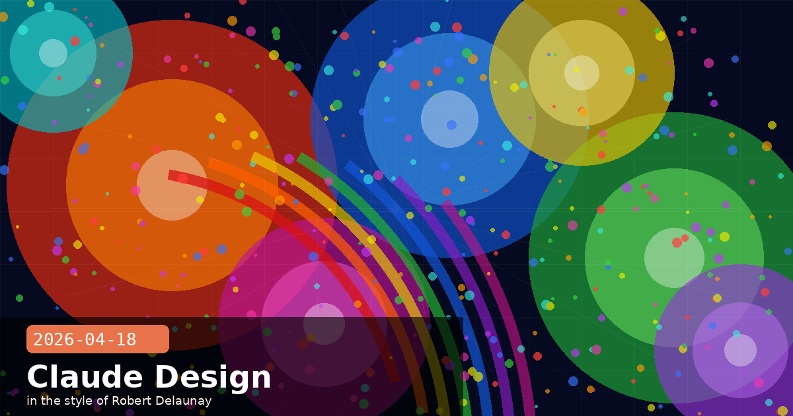

Claude Design, Financial Services Expansion & Cyber Verification Program

🧭 Claude Design Launches from Anthropic Labs — Conversational Visual Asset Generation for Non-Designers
Anthropic released Claude Design on April 17, an experimental product from the Anthropic Labs division that lets users generate professional visual assets — slide decks, one-pagers, wireframes, marketing collateral, and web prototypes — through natural-language prompts and inline conversational editing. It is distinct from Claude Artifacts (which generates standalone HTML/code snippets in a side pane) and is instead a purpose-built design-oriented product with its own export pipeline, adjustment controls, and team design-system ingestion. The research preview is available now to Pro, Max, Team, and Enterprise subscribers at no additional charge.
How it works
Claude Design is powered by Opus 4.7 and operates on a canvas-and-conversation model: you describe what you want, Claude generates a visual draft, and you refine it through follow-up prompts or on-canvas sliders (colour temperature, density, font weight, brand prominence). The product reads your company's existing codebase and design files to extract brand tokens — primary colours, typefaces, logo placement rules — and applies them automatically across generated assets. This means a generated slide deck for an enterprise customer will use that customer's brand kit without a manual style pass.
Supported output formats
PDF — for print-ready deliverables and investor decks
PPTX — editable PowerPoint for team iteration
Standalone HTML — self-contained interactive presentations for web delivery
Canva export — sends layers to a Canva project for pixel-level editing by designers
Who this is actually for — and what it is not
Claude Design is explicitly positioned for founders, product managers, and marketers who need professional-looking visual output without a design background. It is not a replacement for Figma or a professional design workflow — it has no vector editing, no design token overrides at the component level, and no version control. What it does well is collapsing the time from "I need a one-pager for this feature" to "I have something I can send" from hours to minutes. Think of it as the design equivalent of writing a first draft in Claude and then handing it to an editor, rather than a tool professional designers will adopt.
The Anthropic Labs label signals that the product is in active research preview with a real user base but without a committed GA timeline. Features will change based on feedback. The team is particularly interested in how enterprise customers use the design-system ingestion feature, since that is the most technically novel capability and the one most likely to require iteration before a broader rollout.
Claude DesignAnthropic Labsvisual generationresearch previewslide decksbrand systemCanva export
🧭 Claude for Financial Services Gets Claude for Excel, Seven Live Data Connectors and Six Pre-Built Agent Skills
Anthropic announced a significant expansion of its Claude for Financial Services vertical on April 17, adding three distinct new layers to the offering: a native Excel integration in beta, a set of live market-data connectors, and a library of pre-built Agent Skills targeting the most common research workflows in buy-side and sell-side finance. The expansion positions Anthropic directly against Bloomberg's Terminal AI layer and Microsoft Copilot for Finance for the professional financial services market.
Claude for Excel (beta)
Claude for Excel is a sidebar add-in that lets users describe what they want in natural language — "calculate the 3-year CAGR for each row in column C" or "flag any cell where revenue growth exceeds 40% year-over-year" — and Claude reads, analyzes, modifies, and creates Excel workbooks in response. It supports formula generation, conditional formatting, chart creation, and cross-sheet data summarisation. Available to Max, Enterprise, and Teams subscribers. The beta is limited to workbooks under 50MB and English-language cells; multi-language support is on the roadmap.
Seven new live data connectors
Claude for Financial Services can now pull live data from seven new sources, turning Claude into a single interface for research aggregation:
Aiera — earnings call transcripts and event intelligence
Third Bridge — expert network interview transcripts
Chronograph — private equity portfolio monitoring
Egnyte — internal document stores and deal room data
MT Newswires — real-time financial news and regulatory filings
Six pre-built Agent Skills
Rather than asking financial professionals to build their own agents, Anthropic is shipping six production-ready Agent Skills that combine data connectors with orchestrated multi-step reasoning:
Comparable company analysis — builds a comps table from LSEG + Moody's data for a given ticker
DCF modelling — generates a five-year discounted cash flow model with stated assumptions
Due diligence data packs — aggregates company intelligence from Aiera, Third Bridge, and Egnyte into a structured report
Company profiles — one-page summaries combining public filings, earnings transcripts, and news
Earnings analysis — extracts and compares guidance, beats/misses, and management tone across quarters
Coverage report generation — drafts analyst-style initiation reports from connector data
The competitive framing matters here
Bloomberg's Terminal AI and Microsoft Copilot for Finance both require customers to be within those ecosystems. Claude for Financial Services is ecosystem-agnostic: it connects to Bloomberg, LSEG, and non-Bloomberg data in the same interface. The Egnyte connector in particular gives it access to internal, proprietary deal-room documents that no terminal product touches. The practical implication for teams evaluating AI in finance: Claude's connector model is closer to a research orchestration layer than a product-specific AI copilot, which is either a strength (flexibility) or a complexity (more connectors to configure) depending on your infrastructure setup.
financial servicesClaude for Exceldata connectorsAgent SkillsLSEGMoody'sbuy-sidesell-side
🧭 Opus 4.7's Cyber Verification Program: How Security Researchers Get Allowlisted to Skip the New Safety Layer
Buried alongside the Opus 4.7 launch announcement is a detail that matters specifically to the security community: the new model ships with an automated real-time cybersecurity safety layer that intercepts and blocks high-risk requests — offensive exploit generation, novel malware development, and attack-infrastructure design among them. This is the first time Anthropic has deployed an always-on cybersecurity classifier at the model level rather than as an operator-configurable policy. And alongside it, Anthropic launched the Cyber Verification Program, an application-based allowlist that lets legitimate security professionals bypass those blocks.
What the safety layer blocks by default
Anthropic has not published an exhaustive list, but the announcement describes the classifier as targeting: novel vulnerability exploitation (requests that combine specific CVE information with working exploit generation), malware development for non-sandboxed use, attack-infrastructure design (C2 setup, phishing kit generation), and social-engineering content generation at scale. Standard security topics — CTF challenges, code auditing, explaining published CVEs, defensive hardening — are explicitly stated to remain unaffected.
Applying for the Cyber Verification Program
The application process requires:
Proof of employment at a licensed penetration testing firm, a corporate red team, or a recognised vulnerability research organisation
A description of the specific use cases requiring elevated access (e.g. "internal red team exercises under signed SoW with client X")
Agreement to Anthropic's responsible-disclosure terms — researchers who discover model-level vulnerabilities through the program must disclose to Anthropic within 90 days
Approved applications result in an API-key-level flag that unlocks the full Opus 4.7 capability surface for requests from that key. There is no model-switch involved — the same model ID is used, with the classifier operating in a permissive mode for verified keys.
The broader signal: model-level safety layers are coming to all frontier models
Anthropic explicitly frames the Opus 4.7 cybersecurity classifier as a pilot for the approach they intend to apply to Mythos-class models before a broader release. This is the same technique described in Project Glasswing context — deploy defensive-use access first to a verified set, collect real-world usage data, then calibrate the safety layer before opening wider access. If this pattern holds, security teams evaluating whether to plan for Mythos access should expect a similar verification program to be a prerequisite. Start documenting your team's credentials and use-case scope now rather than scrambling when the program opens.
# Check whether your API key has Cyber Verification access
import anthropic
client = anthropic.Anthropic()
# Make a probe call — the response metadata will include
# a 'cyber_verified' flag in the model metadata block
# if your key is in the allowlist
response = client.messages.create(
model="claude-opus-4-7",
max_tokens=10,
messages=[{"role": "user", "content": "ping"}]
)
print(response.model) # claude-opus-4-7
# Check response headers for X-Anthropic-Cyber-Verified: true